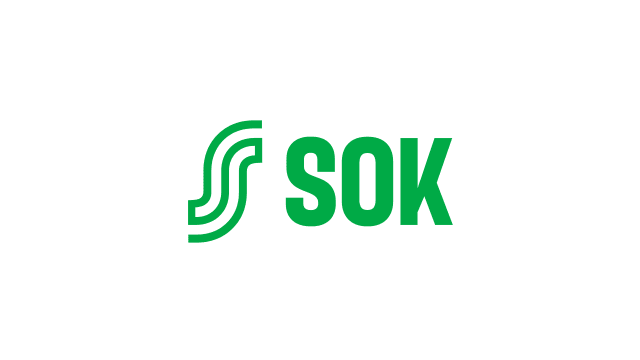

Saldot, keräily ja täydennys samassa järjestelmässä — reaaliaikaisesti, 1 812 toimipaikassa.
Luvut 12 pilottimyymälästä, kahdeksan viikon seurantajaksolta.
Menekkiin perustuva tilausehdotus jokaiselle hyllypaikalle.